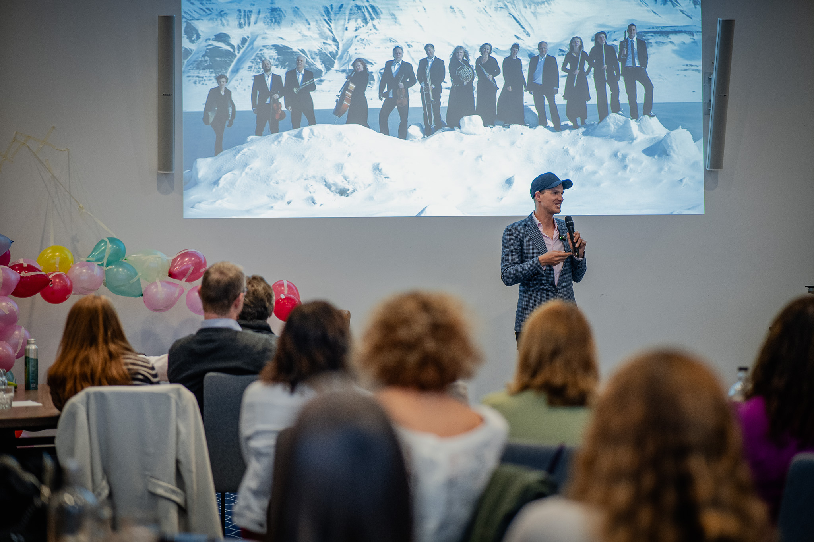

A high-functioning launch team is rare, and it doesn't happen by chance. We build it with high-performance coaching and facilitation that work as one system, designed around what your team is actually carrying, not an off-the-shelf programme.

Built around what your team is carrying, not a slide deck off the shelf.
Capability building and workshops on their own move the needle. Add coaching and it moves four times as far.
Productivity gain · capability building & workshops vs the same paired with coaching
AI was meant to replace it. Budgets got cut. The internet filled up with free advice. And the leaders who get coached keep pulling ahead of the ones who don't. The numbers say why.
Every couple of years, someone declares it finished.
It kept growing through all of it. And no algorithm has ever helped a leader find their courage.
Most providers do one or the other. We run both together, because a team's problems live in the room and in the people, and you have to work both at once for anything to hold.
We get the team together and surface the real issues, the ones that usually stay in the corridor. Bespoke sessions built from the intelligence, never a generic format. The team leaves with a shared identity and commitments it owns.
1:1 high-performance coaching for the leaders who carry it. Influence, decisions, presence, and the courage to have the conversation everyone's been avoiding. Confidential, and built around what each person is navigating now.
Asset and project leaders sit at the intersection of every function, holding no formal power over the people they need to align. When a matrix is new, the friction is predictable. Functions turn inward and spend their energy communicating their value rather than contributing it.
You can't restructure your way out of it. We give project leaders a shared language and the habits that change how they show up in the matrix every day.
Practical tools, applied to the live stakeholder situations your team is managing right now. Not theory. The accounts they're stuck on this week.
Specific and agreed before the room empties. A team that doesn't need you to hold the matrix together on its behalf.
Impactful coaching that inspired, focused, and equipped me with effective leadership strategies to excel in my role.Dr Jon Beauchamp · VP Medical Affairs, argenx
A room of capable people, learning to move as one.
A 20-person commercial function. 30+ stakeholders across 10 countries. An oncology biotech chasing $3bn. He'd built the systems. The politics he was still running on instinct.
Cross-functional blame dropped. The function moved from coordination layer to strategic centre, and he presented the evidence to his CCO as proof.
Full P&L across 10 markets including Japan and Mexico. Experienced, culturally diverse, commercially driven, and pulling in broadly the right direction, but not as one.
Market engagement scores up across the territory mix. Recurring escalations gone. A second phase contracted.
Seven markets after a restructure. Direct reports who were technically strong and commercially capable, but kept sending decisions upward instead of making them.
Escalations shifted. Managers started owning their markets rather than reporting on them. Sara got her strategic time back.
Read the full case studies.
Request the case studies →Stakeholder intelligence, questionnaire and confidential interviews. We find out what's actually happening before a single session is designed.
Bespoke, fully-facilitated workshops built from the findings, turning data into a shared identity and a narrative that holds under pressure.
We make it land and last. Socialisation, 1:1s with each leader and a legacy narrative that survives team changes.
Book a 15-minute conversation. We'll talk through where your team is now, and the engagement that would move it furthest. No pitch, no obligation.